我的主要晨運路線是山澗田野, 但每個月總會安排幾次往海濱走走。今天就介紹離開我家不遠的荃灣海濱晨運地點。
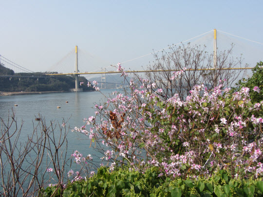我是在荃灣出生及長大, 親身經歷荃灣由一個鄉鎮發展至今的規模新市鎮。在我兒時的時候, 荃灣大部份的地方都是鄉村, 就算是市中心最熱鬧的眾安街及沙咀道交界一帶的商店及住宅, 也主要是一些簡陋的木屋及鐵皮屋。而我父親初到荃灣時, 沙咀道仍然是海岸。
我兒時居住在山坡上的老圍村, 在家附近一帶隨處可以清晰的看見荃灣的海灣, 從左至右, 整個海灣就展現眼前, 每當天氣良好的日子, 便可以看著太陽慢慢的沈沒大海。
當年, 荃灣只有一座比較高的大樓, 就是座落在青山道的遠東銀行大廈, 在荃灣任何地方幾乎都可以看見, 十分雄偉。 從我居住的地方往山下市區方向望去, 遠東銀行大廈可用「鶴立雞群」來形容。 當年遠東銀行大廈的天台有一個圓形、 用鐵枝建造的尖塔。 尖塔高約三十尺, 一個像帽子的大圓形鐵架放在塔的最頂部。塔尖上圓形的帽子在大部份時間都是不動的, 但每當有電報收發的時候, 塔尖上圓形的帽子便慢慢的旋轉, 這時, 第一個發現帽子轉動的小朋友便會大聲呼叫, 接著, 所有人都停下來欣賞這「新科技奇觀」。 可惜這奇觀一般只有二至三分鐘的時間, 很快便表演完畢了。接著小朋友又繼續遊戲, 大人又繼續忙碌工作。在當年電報收發的次數十分疏落, 一個月可能不超過十次。
好了, 介紹了我兒時有關荃灣的一些生活瑣碎事, 現在就開始我今天的荃灣海濱晨運。
從我家走到荃灣海濱大約只需十五分鐘。
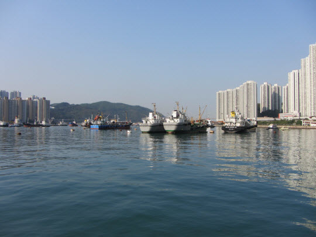 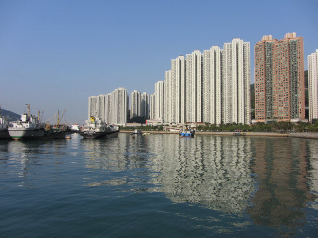從這裡沿海岸的行人路可以一直走到深井, 全程約6,500米, 步行約個半鐘。沿途都有這可愛的七彩小矮人路標陪伴, 指示你從荃灣碼頭的起點總共走了多少路。噢! 原來已經走了 500 米。
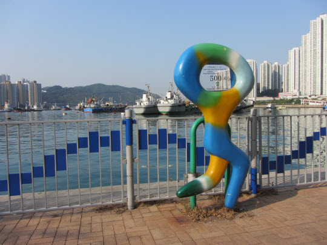沿海岸一直向西面走。
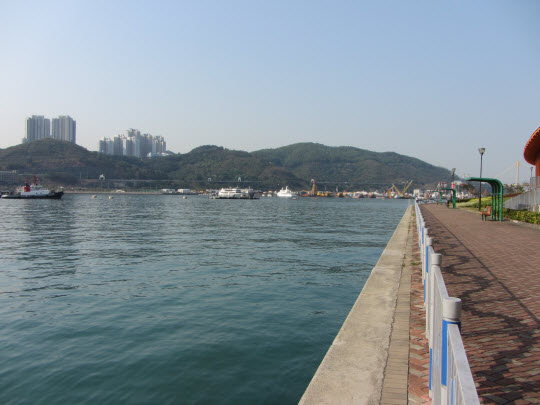今天萬里無雲, 十分舒服。
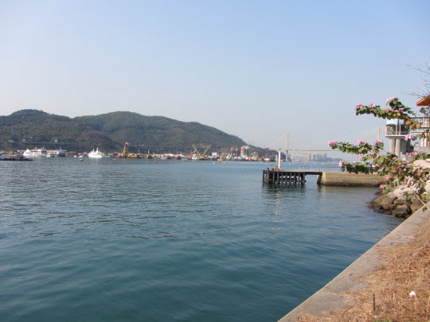穿過一行車隧道。
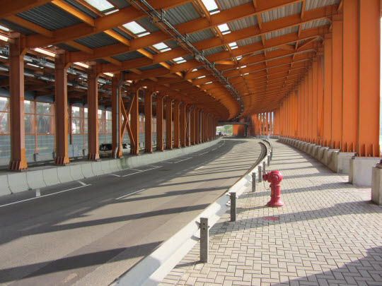 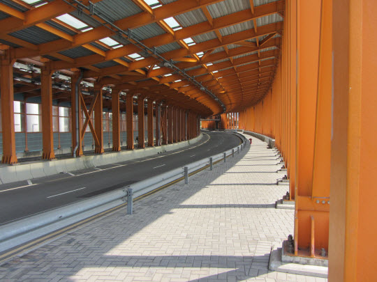又經過另一個七彩小矮人路標。很快已經走了 1,500 米了。
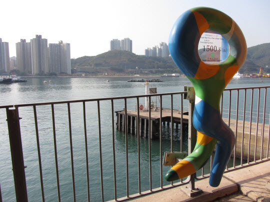繼續向前走, 汀九橋就在前面。
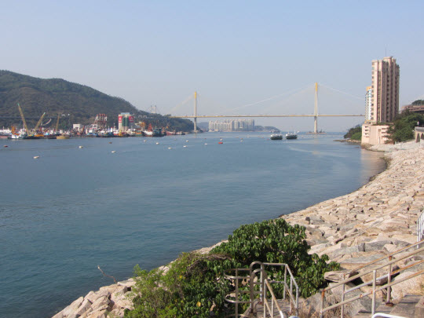沿海岸旁的行人道走。

繼續向前走, 青馬大橋就在汀九橋的後面。
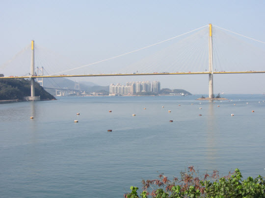又經過另一個七彩小矮人路標, 原來不知不覺中已經走了 2,500 米。
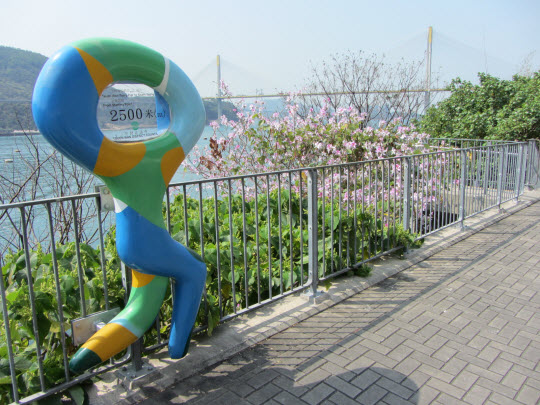風光十分優美。
這裡的海水十分清澈。
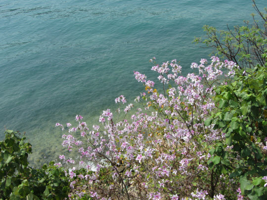風景真是十分優美, 忍不住多拍攝幾張留念。真奇怪, 到此晨運已經很多次, 為什麼拿起相機拍攝時才覺得這裡特別美麗?
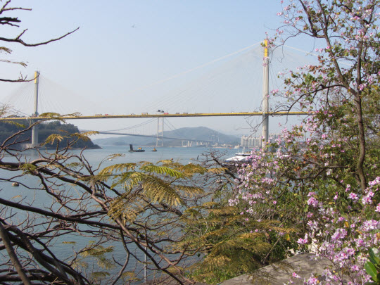 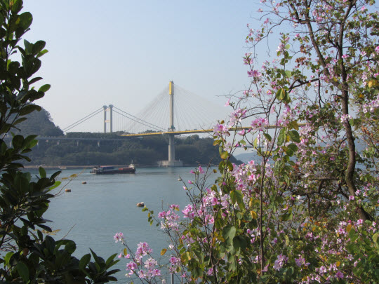繼續向前走, 經過汀九村。
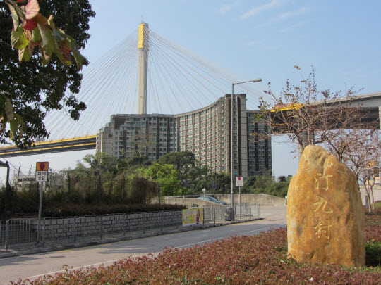汀九村背山面海, 除了環境優美外, 還是好風水的地方。
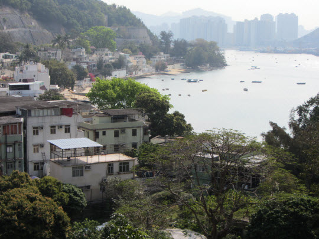為了配合汀九橋的交通, 在起點處的山谷建造了高高及彎曲的橋樑。
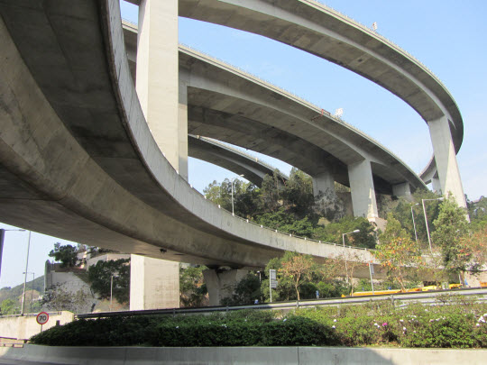來到汀九橋起點的下面。
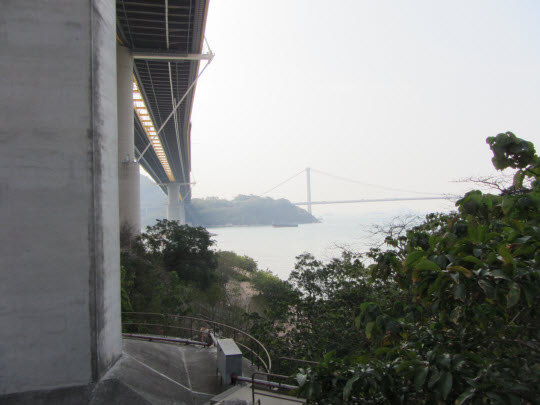汀九橋旁的樹林中有一頗為隱蔽的石階, 向下走便到達麗都灣。是不是有些像釜山的廣安里海水浴場及廣安大橋?
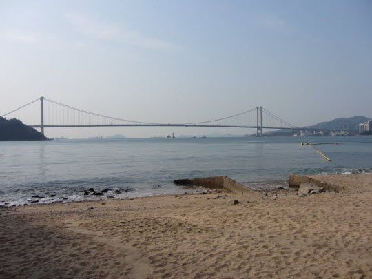 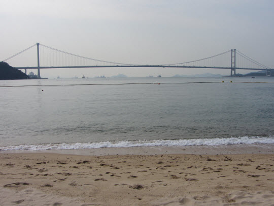 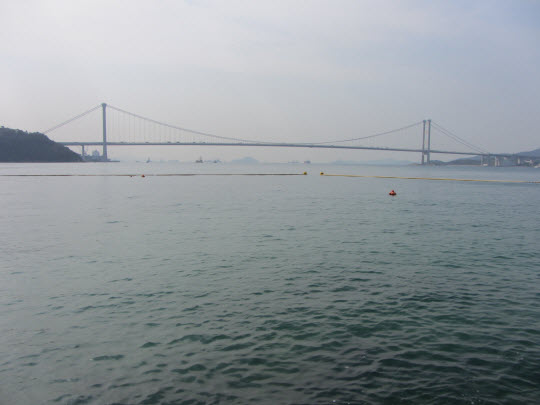慢慢的走過麗都灣沙灘。
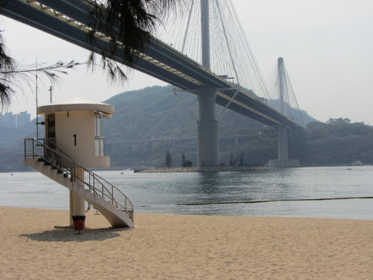麗都灣沙灘旁有一個海濱公園, 相信是甚少人知道, 因為我從來沒有在這裡遇上其他遊人。 這裡是觀賞青馬大橋的最絕佳地方。我每次來的時候, 青馬大橋總擺出不同的姿態, 永遠不教人失望; 有時是夕陽餘暉的大橋, 有時是霧鎖大橋, 最美的一次是一道艷麗彩虹剛好彎彎的將大橋蓋著。可惜我平常從不攜帶相機, 只有記錄在腦中。對不起, 不要問我為什麼不用智能手機? 答案絕對只有一個 – 負擔不起。
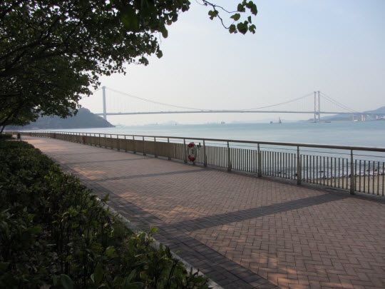 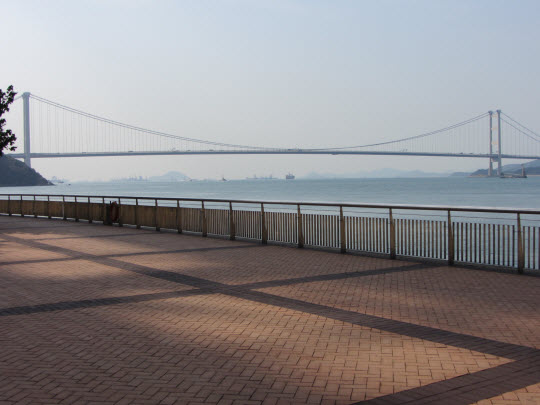青馬大橋就站在海的中央, 從左而右橫跨整個海灣。
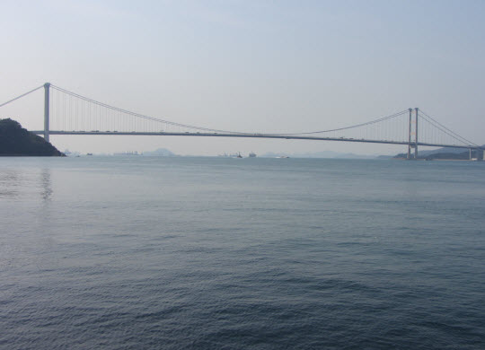麗都灣海濱公園其實就在汀九橋的下面。
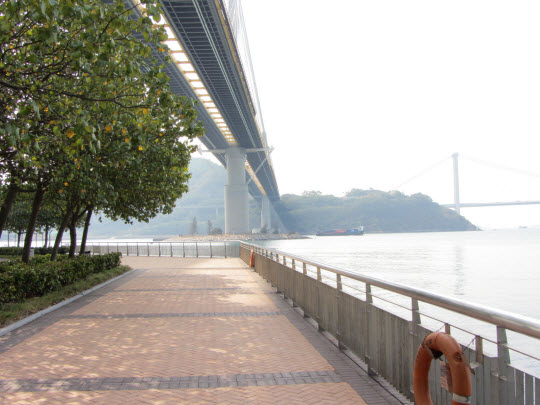剛好有一隻貨輪在青馬大橋下面慢慢的駛過。
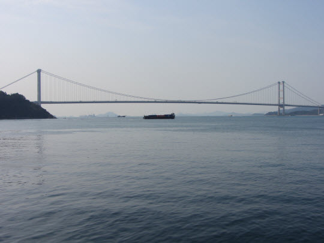 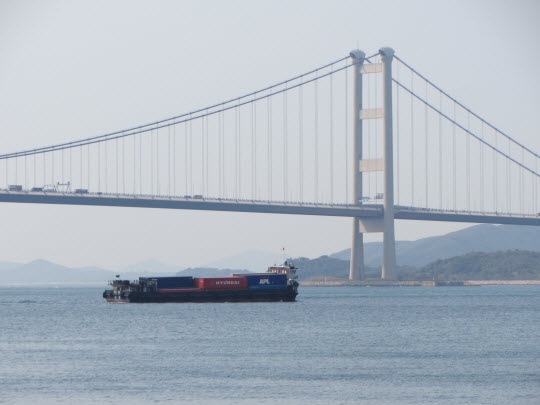沿海濱公園旁的步道走, 這裡可以近距離的「一眼望雙橋」。雙橋當然是指汀九橋及青馬大橋。
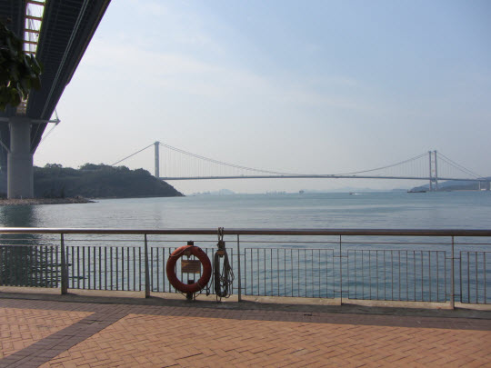 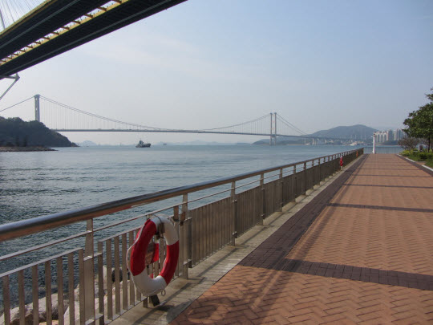景色如畫的海濱公園。
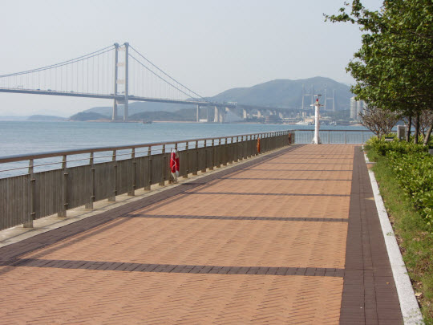從不同角度觀看雙橋景色。
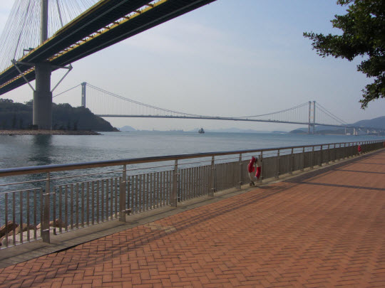 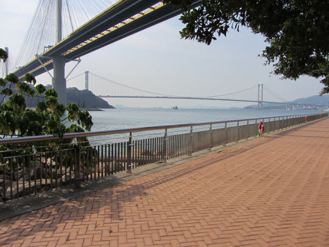 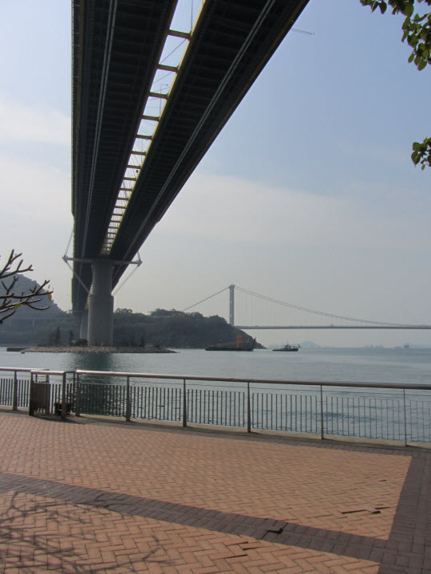汀九橋旁的的大廈是帝景酒店。是不是十分接近大橋?
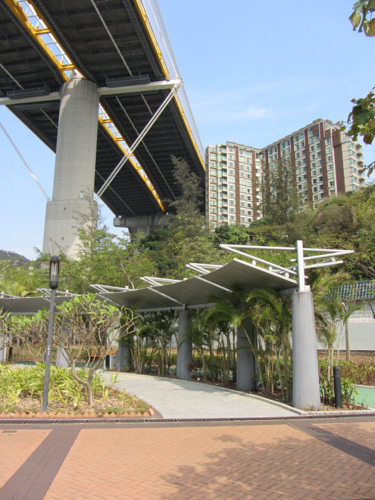帝景酒店就在汀九橋旁的下面。 這可能是最接近汀九橋的建築物。
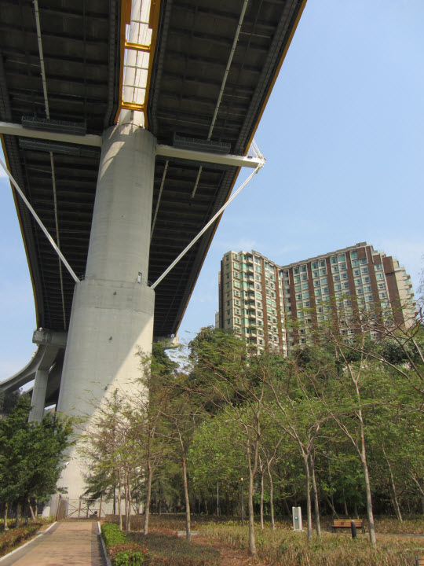再從另一個角度看。
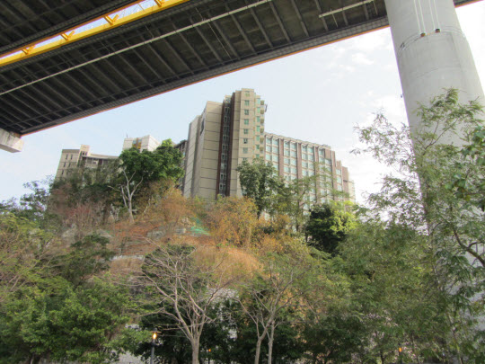 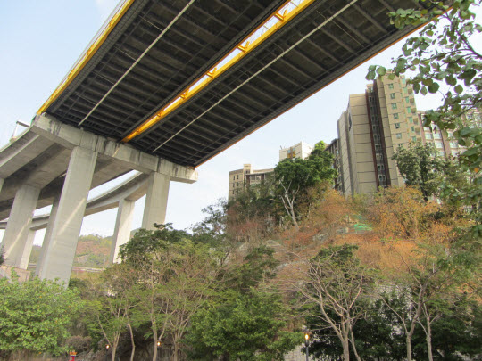汀九橋下的海濱公園, 十分寧靜。
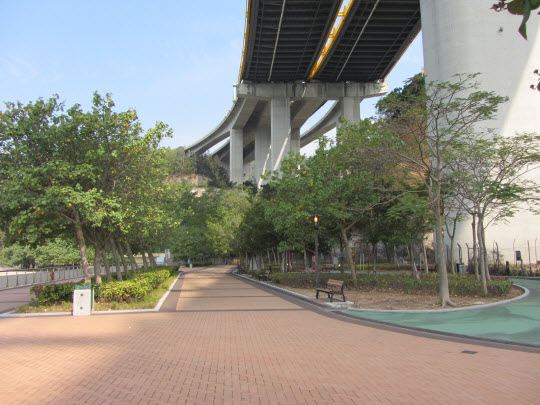在海濱公園散步一會後, 接著便坐在面對大海的椅子休息。在這優美而寧靜的環境, 有時候真是不捨得離開。這裡是今天晨運的終點站, 不打算繼續向前走了, 接著循原路走回家中, 結束了這一天的晨運, 全程需時約三個半小時。